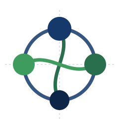
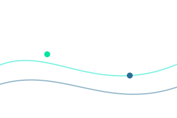

Manual de marca e biblioteca de componentes do ecossistema de inovação de Anápolis. Um sistema vivo que conecta academia, empresas, governo e sociedade sob uma linguagem visual única.
A marca InovAnápolis nasce da ideia de ecossistema: nós que se conectam e se fortalecem mutuamente. Cada círculo representa um agente — academia, empresas, governo e sociedade — e as linhas que os atravessam representam o fluxo de conhecimento, capital e oportunidade que move a cidade rumo a 2030.
Posicionar Anápolis entre os principais polos de inovação do Brasil, conectando talento, indústria e ciência.
O hub onde saúde, logística, indústria avançada e inteligência artificial se encontram para gerar valor.
O símbolo é construído sobre um círculo-base e dois eixos de conexão em curva. Os quatro nós ancoram nos pontos cardeais. A assinatura tipográfica combina o peso 800 de Inov com o peso 500 de Anápolis.

A arte-mestre vetorial oficial deve substituir esta reconstrução para uso final.
Paleta bioluminescente — nasce do escuro e emerge com cor própria. O Abismo Azul ancora a identidade; o Teal Bioluz e o Magenta Coral criam energia e contraste; os Oceanos estruturam a hierarquia. Clique em qualquer cor para copiar o HEX.
Inter conduz títulos, interfaces e textos — versátil, contemporânea e com excelente leitura em telas. JetBrains Mono marca dados, códigos e legendas técnicas.
Plataforma de diagnóstico assistido por IA para a rede de saúde regional.
| Programa | Status | Atores | Progresso |
|---|---|---|---|
| Hub de Biotecnologia | Ativo | Academia · Empresas | |
| Corredor Logístico Digital | Em análise | Governo · Empresas | |
| Centro de IA Aplicada | Novo | Academia · Sociedade | |
| Distrito de Indústria Avançada | Ativo | Empresas · Governo |
Aplicação do sistema em modo escuro — o mesmo grid, tipografia e cores de dado em um painel institucional.
Os nós e conexões do símbolo viram textura institucional — usados com discrição, sempre como pano de fundo que deixa a tipografia respirar.

Gradiente · conexões
Fundo escuro · fluxo